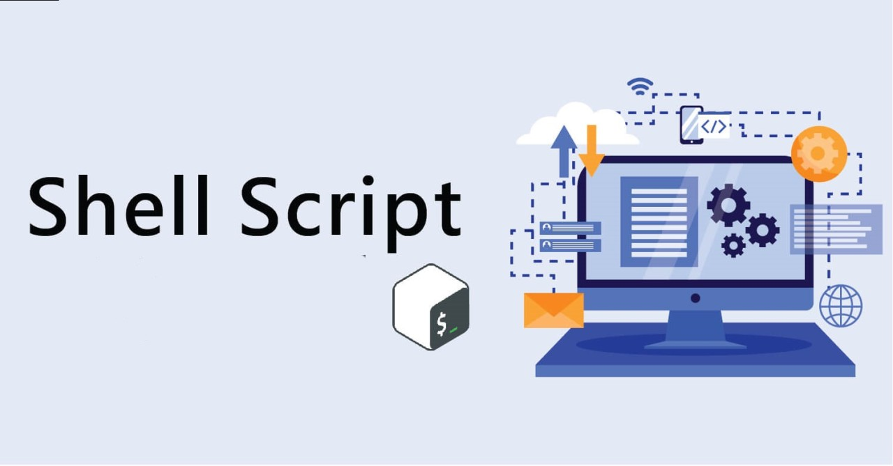
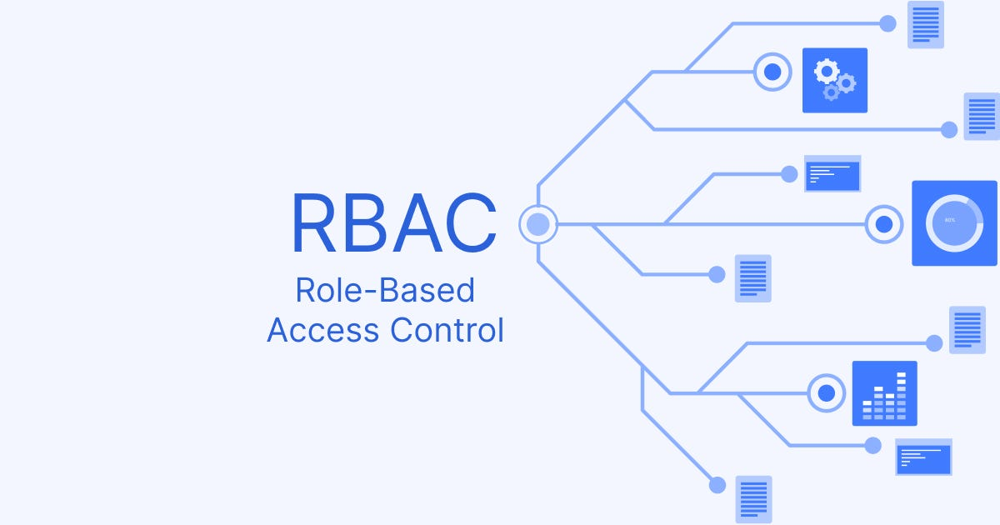

Password Manager Website
Password manager site which uses AES-CBC 256-bit encryption to store user’s vault data, and PBKDF2 SHA-256 for user credentials with the use of Python3. All data is hashed and salted before being stored in the PostgreSQL database. SSL, OTP, and SMTP are used to ensure user safety.
Linux System Monitoring Script
Shell script which monitors whether a system is running or not using Ubuntu Linux.
RBAC Configured In Java
This is a Role Based Access Control system that I built in Java. It allows users to create, delete, and modify roles and permissions.
Unbeatable TicTacToe AI
This is a Tic Tac Toe game which no user is ever capable of beatingsince it uses a miniMax algorithm to generate an AI that is capable of always
making the most logical move possible which results in a draw in its worst case scenario.